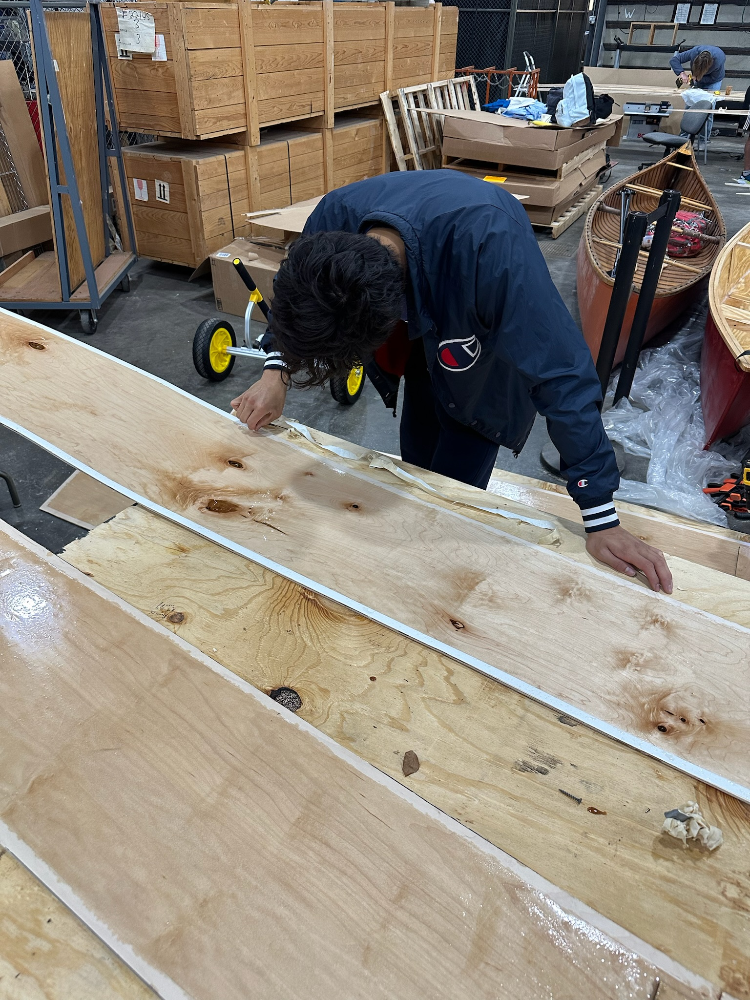
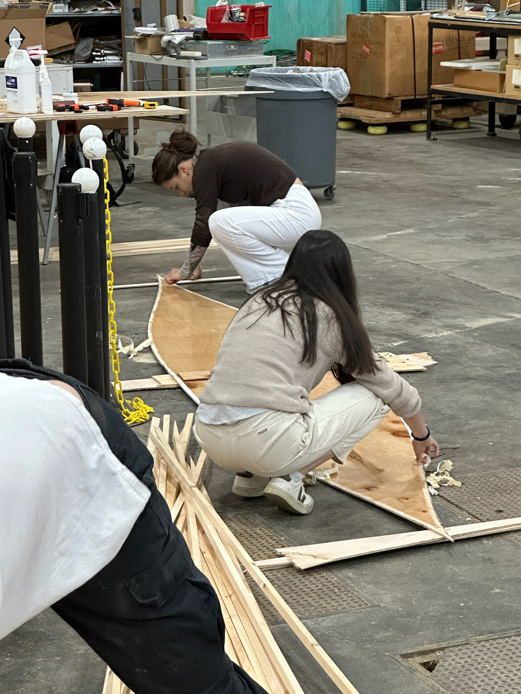
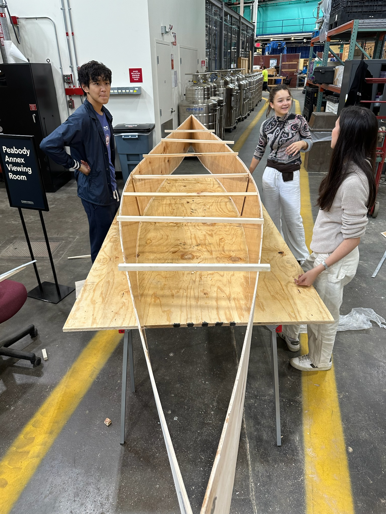
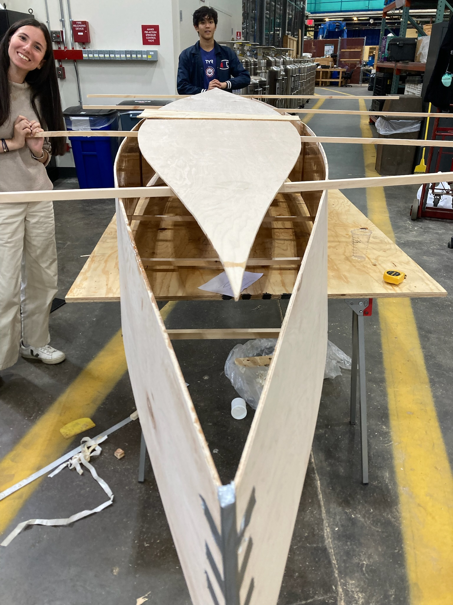
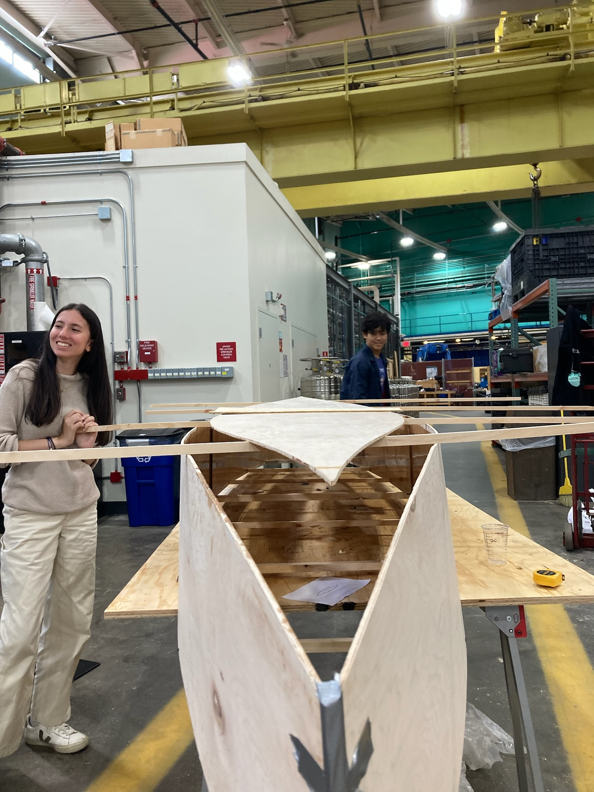

### Week 5: Forming the Hull
Plane down excess epoxy on butt joints. Cut temporary spreaders. Form the plywood pieces into the shape of the hull.
#### Team speed docs
This week the boat finally started to take form and though we had some issues, it ended up working out. We again sanded, and removed the tape we used to gaurd from epoxy leakage which was hard. In the future make sure to use one-sided tape that won't tear easily like duct tape. We then cut our temporary spreaders out of scrap, according to the lengths provided by Nathan. We then started to assemble, drilling the sides of our boat into the spreaders. The boat started to take shape but it was clear that something was wrong with our curvature as the hull of our boat did not fit into the outline of the sides at all. It turned out that Nathan had given us incorrecet spreader lenghts but we didn't have the time to fix that on the day.
Assignment: Document your work on your team’s website. Reading: The Craftsman, Part 1.2 (pp. 81-148).




